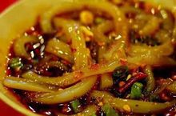
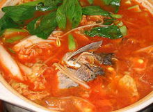
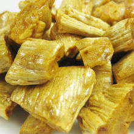
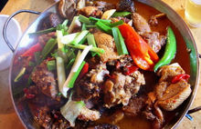

| 名称 | 特点 | 图片 |
|---|---|---|
| 凤凰凉粉 | 凤凰一带的居民食用凉粉有着悠久的历史。这里的人们都非常喜欢食用凉粉，它味美消暑，含有丰富的营养。据《中药大辞典》载：绿豆凉粉 有“清热解毒，治痛疽疮肿初起，烫伤，跌外伤，并解热药及酒食诸毒。 |  |
| 苗家酸汤 | J苗家酸汤是苗家人（当地人对苗族人称呼苗家人）的传统汤菜。酸菜一般采选萝卜叶、白菜已开始发黄的叶片，在阴凉处摊摆一两天，使叶片呈金黄色，然后洗净、切碎、装坛，再用滚开的米汤和酸汤曲浸泡并靠近有热火气的地方摆放，一天一夜可成，可凉拌可做汤。 |  |
| 凤凰姜糖 | 姜糖是凤凰特产，手工精制而成，已有一百多年的历史，是凤凰传统的休闲食品。它有防治感冒、化食、止咳化痰、开胃生津等功效。 |  |
| 血粑鸭 | 血粑鸭是凤凰和湘西地区特色的地方菜之一，制作时将预先浸泡好的上等糯米装入碗里，宰杀鸭子时将鸭血淋入糯米浸泡均匀。等鸭血凝固后再放入锅里蒸熟，放冷后将血粑均匀切成一小方块，再用菜油煎熟。待鸭肉煮九分熟时，把原先煎熟的血粑放入鸭肉内一起烹煮，并掺合一些香料物品成金黄色即可出锅。 |  |